Analysis of Adaptive Immune Receptor Repertoire Sequencing data with LymphoSeq2
Elena Wu
Shashidhar Ravishankar
David Coffey
2025-10-10
Source:vignettes/LymphoSeq2.Rmd
LymphoSeq2.Rmd
library(LymphoSeq2)
library(RColorBrewer)
library(grDevices)
library(vroom)
# wordcloud2 is optional for visualizations
if (requireNamespace("wordcloud2", quietly = TRUE)) {
library(wordcloud2)
has_wordcloud2 <- TRUE
} else {
has_wordcloud2 <- FALSE
message("Note: wordcloud2 package not available. Word cloud examples will be skipped.")
}Adaptive Immune Receptor Repertoire Sequencing (AIRR-seq) provides a unique opportunity to interrogate the adaptive immune repertoire under various clinical conditions. The utility offered by this technology has quickly garnered interest from a community of clinicians and researchers investigating the immunological landscapes of a large spectrum of health and disease states. LymphoSeq2 is a toolkit that allows users to import, manipulate and visualize AIRR-Seq data from various AIRR-Seq assays such as Adaptive ImmunoSEQ, BGI-IRSeq, and 10X VDJ sequencing. The platform also supports the importing of AIRR-seq data processed using the MiXCR pipeline. The vignette highlights some of the key features of LymphoSeq2.
Importing data
The function readImmunoSeq imports AIRR-seq receptor
files from Adaptive ImmunoSEQ assay as well well as BGI-IRSeq assay. The
sequences can be (.tsv) files processed using one of the three following
platforms: Adaptive Biotechnologies ImmunoSEQ analyzer, BGI IR-SEQ
iMonitor platform, and the MiXCR pipeline for AIRR-seq data analysis.
The function has the ability to identify file type based on the headers
provided in the (.tsv) file, accordingly the data is transformed into a
format that is compatible AIRR-Community guidelines (https://github.com/airr-community/airr-standards).
To explore the features of LymphoSeq2, this package includes 2 example data sets. The first is a data set of T cell receptor beta (TCRB) sequencing from 10 blood samples acquired serially from a single patient who underwent a bone marrow transplant (Kanakry, C.G., et al. JCI Insight 2016;1(5):pii: e86252). The second, is a data set of B cell receptor immunoglobulin heavy (IGH) chain sequencing from Burkitt lymphoma tumor biopsies acquired from 10 different individuals (Lombardo, K.A., et al. Blood Advances 2017 1:535-544). To improve performance, both data sets contain only the top 1,000 most frequent sequences. The complete data sets are publicly available through Adapatives’ immuneACCESS portal. As shown in the example below, you can specify the path to the example data sets using the command
system.file("extdata", "TCRB_sequencing", package = "LymphoSeq2") # For the TCRB files
#> [1] "/home/runner/work/_temp/Library/LymphoSeq2/extdata/TCRB_sequencing"
system.file("extdata", "IGH_sequencing", package = "LymphoSeq2") # For the IGH files.
#> [1] "/home/runner/work/_temp/Library/LymphoSeq2/extdata/IGH_sequencing"readImmunoSeq can take as input, a single file name, a
list of files or the path to a directory containing AIRR-seq data. The
columns are renamed to follow AIRR-community guidelines based on the
input file type. The function returns a tibble with individual file
names set as the repertoire_id. The CDR3 nucleotide and
amino acid sequences are denoted by the junction and
junction_aa fields respectively. The counts of the CDR3
sequences observed, and their frequency in each individual repertoire is
denoted by the duplicate_count and
duplicate_frequency field respectively.
study_files <- system.file("extdata", "TCRB_sequencing", package = "LymphoSeq2")
study_table <- LymphoSeq2::readImmunoSeq(study_files, threads = 1) |>
topSeqs(top = 50) # Reduced from 100 to speed up vignette building
#> Dataset Analysis:
#> Files: 10, Total: 0.00 GB, Largest: 0.0 MB
#> Available memory: 11.1 GBLooking at the study_table we see a tibble with 145
columns and 1000 rows
study_table
#> # A tibble: 500 × 145
#> sequence_id sequence sequence_aa rev_comp productive vj_in_frame stop_codon
#> <chr> <chr> <chr> <lgl> <lgl> <lgl> <lgl>
#> 1 TRB_CD4_949_1 GAGTCAG… CASSESAGST… FALSE TRUE NA FALSE
#> 2 TRB_CD4_949_2 GCCCTCA… NA FALSE FALSE NA TRUE
#> 3 TRB_CD4_949_3 ATTCCCT… NA FALSE FALSE NA TRUE
#> 4 TRB_CD4_949_4 GTGACAT… CASSPRQGES… FALSE TRUE NA FALSE
#> 5 TRB_CD4_949_5 ACCTTGG… CASSLDGQGQ… FALSE TRUE NA FALSE
#> 6 TRB_CD4_949_6 GTGACCA… CSAKTSGITY… FALSE TRUE NA FALSE
#> 7 TRB_CD4_949_7 ACCCTGC… CASSQD*ASS… FALSE TRUE NA FALSE
#> 8 TRB_CD4_949_8 CTCCTTC… CAWSDFQGPR… FALSE TRUE NA FALSE
#> 9 TRB_CD4_949_9 CTGACGA… CASSPDKWGY… FALSE TRUE NA FALSE
#> 10 TRB_CD4_949_… TCAGAAC… CASSFRTGPT… FALSE TRUE NA FALSE
#> # ℹ 490 more rows
#> # ℹ 138 more variables: complete_vdj <lgl>, locus <chr>, v_call <chr>,
#> # d_call <chr>, d2_call <chr>, j_call <chr>, c_call <chr>,
#> # sequence_alignment <chr>, sequence_alignment_aa <chr>,
#> # germline_alignment <chr>, germline_alignment_aa <chr>, junction <chr>,
#> # junction_aa <chr>, np1 <chr>, np1_aa <chr>, np2 <chr>, np2_aa <chr>,
#> # np3 <chr>, np3_aa <chr>, cdr1 <chr>, cdr1_aa <chr>, cdr2 <chr>, …Since the study table is a tibble, we can use tidyverse syntax to extract a list of sample names
Working with 10X Genomics Single-Cell Data
LymphoSeq2 supports 10X Genomics single-cell VDJ sequencing data, enabling analysis of paired TCR chains from individual T cells.
Reading 10X Data
# Load example 10X dataset (contig_annotations.csv format)
file_path_10x <- system.file("extdata", "10X_example", package = "LymphoSeq2")
sc_data <- read10x(file_path_10x)
#> Registered S3 methods overwritten by 'readr':
#> method from
#> as.data.frame.spec_tbl_df vroom
#> as_tibble.spec_tbl_df vroom
#> format.col_spec vroom
#> print.col_spec vroom
#> print.collector vroom
#> print.date_names vroom
#> print.locale vroom
#> str.col_spec vroom
sc_data
#> # A tibble: 200 × 17
#> cell_id clone_id sequence_id productive rev_comp v_call d_call j_call c_call
#> <chr> <chr> <chr> <lgl> <lgl> <chr> <lgl> <chr> <chr>
#> 1 CELL001… clonoty… CELL001-1_… TRUE FALSE TRBV7… NA TRBJ2… TRBC1
#> 2 CELL001… clonoty… CELL001-1_… TRUE FALSE TRAV19 NA TRAJ6 TRAC
#> 3 CELL002… clonoty… CELL002-1_… TRUE FALSE TRBV1… NA TRBJ1… TRBC1
#> 4 CELL002… clonoty… CELL002-1_… TRUE FALSE TRAV8… NA TRAJ21 TRAC
#> 5 CELL003… clonoty… CELL003-1_… TRUE FALSE TRBV6… NA TRBJ1… TRBC2
#> 6 CELL003… clonoty… CELL003-1_… TRUE FALSE TRAV19 NA TRAJ31 TRAC
#> 7 CELL004… clonoty… CELL004-1_… TRUE FALSE TRBV5… NA TRBJ1… TRBC2
#> 8 CELL004… clonoty… CELL004-1_… TRUE FALSE TRAV2… NA TRAJ33 TRAC
#> 9 CELL005… clonoty… CELL005-1_… TRUE FALSE TRBV7… NA TRBJ2… TRBC2
#> 10 CELL005… clonoty… CELL005-1_… TRUE FALSE TRAV21 NA TRAJ15 TRAC
#> # ℹ 190 more rows
#> # ℹ 8 more variables: junction <chr>, junction_aa <chr>, junction_length <int>,
#> # junction_aa_length <int>, duplicate_count <dbl>, consensus_count <dbl>,
#> # is_cell <lgl>, repertoire_id <chr>The read10x function automatically detects whether the
input is in AIRR format (airr_rearrangement.tsv) or 10X
Genomics format (contig_annotations.csv).
Merging Paired Chains
Single-cell data contains separate entries for each TCR chain (TRA and TRB). We can merge these into paired observations:
# Strict mode: only cells with exactly 1 TRA + 1 TRB
paired_strict <- merge_chains(sc_data, mode = "strict")
cat("Strict mode yielded", nrow(paired_strict), "paired cells\n")
#> Strict mode yielded 100 paired cells
paired_strict
#> # A tibble: 100 × 29
#> cell_id repertoire_id junction junction_aa v_call j_call d_call v_family
#> <chr> <chr> <chr> <chr> <chr> <chr> <chr> <chr>
#> 1 CELL001-1 contig_annotati… CCATATC… CAVGDNSKLI… TRAV19 TRAJ6 NA TRAV19
#> 2 CELL002-1 contig_annotati… GCCTAGA… CAASDYGQNF… TRAV8… TRAJ21 NA TRAV8
#> 3 CELL003-1 contig_annotati… TTGAAAC… CAVGDNSKLI… TRAV19 TRAJ31 NA TRAV19
#> 4 CELL004-1 contig_annotati… CCTTGAG… CAASPRRALT… TRAV2… TRAJ33 NA TRAV26
#> 5 CELL005-1 contig_annotati… TAGTCGA… CAASDYGQNF… TRAV21 TRAJ15 NA TRAV21
#> 6 CELL006-1 contig_annotati… GACAGAC… CALSDPNTNA… TRAV2… TRAJ21 NA TRAV26
#> 7 CELL007-1 contig_annotati… CGAGCGC… CAASEDGGGF… TRAV17 TRAJ6 NA TRAV17
#> 8 CELL008-1 contig_annotati… GACGTTG… CAASPRRALT… TRAV8… TRAJ6 NA TRAV8
#> 9 CELL009-1 contig_annotati… GATGTGG… CAVGDNSKLI… TRAV1… TRAJ33 NA TRAV12
#> 10 CELL010-1 contig_annotati… CTGGACC… CAASEDGGGF… TRAV2… TRAJ12 NA TRAV26
#> # ℹ 90 more rows
#> # ℹ 21 more variables: j_family <chr>, d_family <chr>, v_call_alpha <chr>,
#> # j_call_alpha <chr>, d_call_alpha <lgl>, c_call_alpha <chr>,
#> # v_call_beta <chr>, j_call_beta <chr>, d_call_beta <lgl>, c_call_beta <chr>,
#> # junction_alpha <chr>, junction_aa_alpha <chr>, junction_beta <chr>,
#> # junction_aa_beta <chr>, junction_length <int>, junction_aa_length <int>,
#> # duplicate_count <dbl>, duplicate_frequency <dbl>, productive <lgl>, …
# Best mode: select most frequent chain when multiples exist
paired_best <- merge_chains(sc_data, mode = "best")
cat("Best mode yielded", nrow(paired_best), "paired cells\n")
#> Best mode yielded 100 paired cells
paired_best
#> # A tibble: 100 × 29
#> cell_id repertoire_id junction junction_aa v_call j_call d_call v_family
#> <chr> <chr> <chr> <chr> <chr> <chr> <chr> <chr>
#> 1 CELL001-1 contig_annotati… CCATATC… CAVGDNSKLI… TRAV19 TRAJ6 NA TRAV19
#> 2 CELL002-1 contig_annotati… GCCTAGA… CAASDYGQNF… TRAV8… TRAJ21 NA TRAV8
#> 3 CELL003-1 contig_annotati… TTGAAAC… CAVGDNSKLI… TRAV19 TRAJ31 NA TRAV19
#> 4 CELL004-1 contig_annotati… CCTTGAG… CAASPRRALT… TRAV2… TRAJ33 NA TRAV26
#> 5 CELL005-1 contig_annotati… TAGTCGA… CAASDYGQNF… TRAV21 TRAJ15 NA TRAV21
#> 6 CELL006-1 contig_annotati… GACAGAC… CALSDPNTNA… TRAV2… TRAJ21 NA TRAV26
#> 7 CELL007-1 contig_annotati… CGAGCGC… CAASEDGGGF… TRAV17 TRAJ6 NA TRAV17
#> 8 CELL008-1 contig_annotati… GACGTTG… CAASPRRALT… TRAV8… TRAJ6 NA TRAV8
#> 9 CELL009-1 contig_annotati… GATGTGG… CAVGDNSKLI… TRAV1… TRAJ33 NA TRAV12
#> 10 CELL010-1 contig_annotati… CTGGACC… CAASEDGGGF… TRAV2… TRAJ12 NA TRAV26
#> # ℹ 90 more rows
#> # ℹ 21 more variables: j_family <chr>, d_family <chr>, v_call_alpha <chr>,
#> # j_call_alpha <chr>, d_call_alpha <lgl>, c_call_alpha <chr>,
#> # v_call_beta <chr>, j_call_beta <chr>, d_call_beta <lgl>, c_call_beta <chr>,
#> # junction_alpha <chr>, junction_aa_alpha <chr>, junction_beta <chr>,
#> # junction_aa_beta <chr>, junction_length <int>, junction_aa_length <int>,
#> # duplicate_count <dbl>, duplicate_frequency <dbl>, productive <lgl>, …The merged data contains columns for both alpha and beta chains
(e.g., v_call_alpha, v_call_beta,
junction_alpha, junction_beta).
Single-Cell Analysis
The merged paired-chain data works with all standard LymphoSeq2 functions:
# Calculate clonality (diversity metrics)
diversity_10x <- clonality(paired_best)
diversity_10x
#> # A tibble: 1 × 10
#> repertoire_id total_sequences unique_productive_se…¹ total_count clonality
#> <chr> <int> <int> <dbl> <dbl>
#> 1 contig_annotatio… 100 100 13084 0.0125
#> # ℹ abbreviated name: ¹unique_productive_sequences
#> # ℹ 5 more variables: gini_coefficient <dbl>, simpson_index <dbl>,
#> # inverse_simpson <dbl>, top_productive_sequence <dbl>, convergence <dbl>
# Get top clonotypes
top_clones_10x <- topSeqs(paired_best, top = 10)
top_clones_10x
#> # A tibble: 10 × 29
#> cell_id repertoire_id junction junction_aa v_call j_call d_call v_family
#> <chr> <chr> <chr> <chr> <chr> <chr> <chr> <chr>
#> 1 CELL069-1 contig_annotati… AACAAAC… CIVRVGGAQK… TRAV1… TRAJ42 NA TRAV1
#> 2 CELL036-1 contig_annotati… GACTCCA… CAASDYGQNF… TRAV2… TRAJ28 NA TRAV26
#> 3 CELL048-1 contig_annotati… TTCGAGC… CAASPRRALT… TRAV2… TRAJ31 NA TRAV26
#> 4 CELL067-1 contig_annotati… CCGGAGA… CAASDYGQNF… TRAV21 TRAJ33 NA TRAV21
#> 5 CELL092-1 contig_annotati… AAGAAAA… CAVRDSNYQL… TRAV1… TRAJ6 NA TRAV12
#> 6 CELL086-1 contig_annotati… TCCTCTC… CAASDYGQNF… TRAV1… TRAJ6 NA TRAV12
#> 7 CELL050-1 contig_annotati… TAAACCG… CAASDYGQNF… TRAV2… TRAJ21 NA TRAV26
#> 8 CELL019-1 contig_annotati… TTTGCCG… CAVGDNSKLI… TRAV19 TRAJ12 NA TRAV19
#> 9 CELL001-1 contig_annotati… CCATATC… CAVGDNSKLI… TRAV19 TRAJ6 NA TRAV19
#> 10 CELL062-1 contig_annotati… TATGTGG… CALSDPNTNA… TRAV1… TRAJ12 NA TRAV12
#> # ℹ 21 more variables: j_family <chr>, d_family <chr>, v_call_alpha <chr>,
#> # j_call_alpha <chr>, d_call_alpha <lgl>, c_call_alpha <chr>,
#> # v_call_beta <chr>, j_call_beta <chr>, d_call_beta <lgl>, c_call_beta <chr>,
#> # junction_alpha <chr>, junction_aa_alpha <chr>, junction_beta <chr>,
#> # junction_aa_beta <chr>, junction_length <int>, junction_aa_length <int>,
#> # duplicate_count <dbl>, duplicate_frequency <dbl>, productive <lgl>,
#> # reading_frame <chr>, paired_clonotype <chr>You can also analyze chain-specific properties. For example, to examine V gene usage for the alpha chain:
# Create a table with alpha chain V gene info
alpha_genes <- paired_best |>
dplyr::select(repertoire_id, duplicate_count, v_call = v_call_alpha) |>
dplyr::mutate(
v_family = stringr::str_extract(v_call, "^[^*]+"),
j_call = NA_character_,
d_call = NA_character_,
j_family = NA_character_,
d_family = NA_character_
)
# Calculate gene frequencies
alpha_v_freq <- geneFreq(alpha_genes, locus = "V", family = TRUE)
alpha_v_freqSubsetting Data
The tibble structure of the TCR data allows for easy subsampling of
data. To select the TCR sequences from any given samples in the dataset,
the filter function from the dplyr package can
be used.
TRB_Unsorted_0 <- study_table |>
dplyr::filter(repertoire_id == "TRB_Unsorted_0")
TRB_Unsorted_0
#> # A tibble: 50 × 145
#> sequence_id sequence sequence_aa rev_comp productive vj_in_frame stop_codon
#> <chr> <chr> <chr> <lgl> <lgl> <lgl> <lgl>
#> 1 TRB_Unsorted… TCAATTC… NA FALSE FALSE NA TRUE
#> 2 TRB_Unsorted… CTGATTC… CASSPVSNEQ… FALSE TRUE NA FALSE
#> 3 TRB_Unsorted… ATCAATT… CASSQEVPPY… FALSE TRUE NA FALSE
#> 4 TRB_Unsorted… CACACCC… CASSQEASGR… FALSE TRUE NA FALSE
#> 5 TRB_Unsorted… TGCCATC… NA FALSE FALSE NA TRUE
#> 6 TRB_Unsorted… GCCAGCA… CASSLEHTGA… FALSE TRUE NA FALSE
#> 7 TRB_Unsorted… CCCCTGA… CASSPGDEQYF FALSE TRUE NA FALSE
#> 8 TRB_Unsorted… AGTGCCC… CSARSPSTGT… FALSE TRUE NA FALSE
#> 9 TRB_Unsorted… GGAGCTT… NA FALSE FALSE NA TRUE
#> 10 TRB_Unsorted… CTGTAGT… CASSEKREGH… FALSE TRUE NA FALSE
#> # ℹ 40 more rows
#> # ℹ 138 more variables: complete_vdj <lgl>, locus <chr>, v_call <chr>,
#> # d_call <chr>, d2_call <chr>, j_call <chr>, c_call <chr>,
#> # sequence_alignment <chr>, sequence_alignment_aa <chr>,
#> # germline_alignment <chr>, germline_alignment_aa <chr>, junction <chr>,
#> # junction_aa <chr>, np1 <chr>, np1_aa <chr>, np2 <chr>, np2_aa <chr>,
#> # np3 <chr>, np3_aa <chr>, cdr1 <chr>, cdr1_aa <chr>, cdr2 <chr>, …The str_detect function from stringr
package can be used in conjunction with the filter to find
samples using a pattern
CMV <- study_table |>
dplyr::filter(stringr::str_detect(repertoire_id, "CMV"))
CMV
#> # A tibble: 50 × 145
#> sequence_id sequence sequence_aa rev_comp productive vj_in_frame stop_codon
#> <chr> <chr> <chr> <lgl> <lgl> <lgl> <lgl>
#> 1 TRB_CD8_CMV_… CAGCGCA… CASSPPTGER… FALSE TRUE NA FALSE
#> 2 TRB_CD8_CMV_… CAGCCCT… CASSPAGAYY… FALSE TRUE NA FALSE
#> 3 TRB_CD8_CMV_… CAGCCTG… CASSQDWERL… FALSE TRUE NA FALSE
#> 4 TRB_CD8_CMV_… TCGGCCC… CASSQDLMTV… FALSE TRUE NA FALSE
#> 5 TRB_CD8_CMV_… ATCCTGG… CASSLQGREK… FALSE TRUE NA FALSE
#> 6 TRB_CD8_CMV_… GAGGATC… NA FALSE FALSE NA TRUE
#> 7 TRB_CD8_CMV_… ACCCTGC… CASSQDLGQA… FALSE TRUE NA FALSE
#> 8 TRB_CD8_CMV_… GAGTCCG… CASSLAGDSQ… FALSE TRUE NA FALSE
#> 9 TRB_CD8_CMV_… CTCCTCA… CAISDTGELFF FALSE TRUE NA FALSE
#> 10 TRB_CD8_CMV_… TCCAGCC… NA FALSE FALSE NA TRUE
#> # ℹ 40 more rows
#> # ℹ 138 more variables: complete_vdj <lgl>, locus <chr>, v_call <chr>,
#> # d_call <chr>, d2_call <chr>, j_call <chr>, c_call <chr>,
#> # sequence_alignment <chr>, sequence_alignment_aa <chr>,
#> # germline_alignment <chr>, germline_alignment_aa <chr>, junction <chr>,
#> # junction_aa <chr>, np1 <chr>, np1_aa <chr>, np2 <chr>, np2_aa <chr>,
#> # np3 <chr>, np3_aa <chr>, cdr1 <chr>, cdr1_aa <chr>, cdr2 <chr>, …A metadata file for the TCR sequencing samples can easily be combined
with the study_table by reading in the metadata file as a
tibble and using the dplyr::left_join function to merge the
two tables. In the example below, a metadata file is imported for the
example TCRB data set which contains information on the number of days
post bone marrow transplant the sample was collected and the cellular
phenotype the blood sample was sorted for prior to sequencing.
TCRB_metadata <- readr::read_csv(system.file("extdata", "TCRB_metadata.csv", package = "LymphoSeq2"), show_col_types = FALSE)
TCRB_metadata
#> # A tibble: 10 × 3
#> samples day phenotype
#> <chr> <dbl> <chr>
#> 1 TRB_Unsorted_0 0 Unsorted
#> 2 TRB_Unsorted_32 32 Unsorted
#> 3 TRB_Unsorted_83 82 Unsorted
#> 4 TRB_CD8_CMV_369 369 CD8+CMV+
#> 5 TRB_Unsorted_369 369 Unsorted
#> 6 TRB_CD4_949 949 CD4+
#> 7 TRB_CD8_949 949 CD8+
#> 8 TRB_Unsorted_949 949 Unsorted
#> 9 TRB_Unsorted_1320 1320 Unsorted
#> 10 TRB_Unsorted_1496 1496 Unsorted
study_table <- dplyr::left_join(study_table, TCRB_metadata, by = c("repertoire_id" = "samples"))
study_table
#> # A tibble: 500 × 147
#> sequence_id sequence sequence_aa rev_comp productive vj_in_frame stop_codon
#> <chr> <chr> <chr> <lgl> <lgl> <lgl> <lgl>
#> 1 TRB_CD4_949_1 GAGTCAG… CASSESAGST… FALSE TRUE NA FALSE
#> 2 TRB_CD4_949_2 GCCCTCA… NA FALSE FALSE NA TRUE
#> 3 TRB_CD4_949_3 ATTCCCT… NA FALSE FALSE NA TRUE
#> 4 TRB_CD4_949_4 GTGACAT… CASSPRQGES… FALSE TRUE NA FALSE
#> 5 TRB_CD4_949_5 ACCTTGG… CASSLDGQGQ… FALSE TRUE NA FALSE
#> 6 TRB_CD4_949_6 GTGACCA… CSAKTSGITY… FALSE TRUE NA FALSE
#> 7 TRB_CD4_949_7 ACCCTGC… CASSQD*ASS… FALSE TRUE NA FALSE
#> 8 TRB_CD4_949_8 CTCCTTC… CAWSDFQGPR… FALSE TRUE NA FALSE
#> 9 TRB_CD4_949_9 CTGACGA… CASSPDKWGY… FALSE TRUE NA FALSE
#> 10 TRB_CD4_949_… TCAGAAC… CASSFRTGPT… FALSE TRUE NA FALSE
#> # ℹ 490 more rows
#> # ℹ 140 more variables: complete_vdj <lgl>, locus <chr>, v_call <chr>,
#> # d_call <chr>, d2_call <chr>, j_call <chr>, c_call <chr>,
#> # sequence_alignment <chr>, sequence_alignment_aa <chr>,
#> # germline_alignment <chr>, germline_alignment_aa <chr>, junction <chr>,
#> # junction_aa <chr>, np1 <chr>, np1_aa <chr>, np2 <chr>, np2_aa <chr>,
#> # np3 <chr>, np3_aa <chr>, cdr1 <chr>, cdr1_aa <chr>, cdr2 <chr>, …Now the metadata information can be used to further subset the data. For instance to select all “Unsorted” samples collected more than 300 days after bone marrow transplant, we would use the following code
unsorted_300 <- study_table |>
dplyr::filter(day > 300 & phenotype == "Unsorted")
unsorted_300
#> # A tibble: 200 × 147
#> sequence_id sequence sequence_aa rev_comp productive vj_in_frame stop_codon
#> <chr> <chr> <chr> <lgl> <lgl> <lgl> <lgl>
#> 1 TRB_Unsorted… CAGCCCT… CASSPAGAYY… FALSE TRUE NA FALSE
#> 2 TRB_Unsorted… CAGCGCA… CASSPPTGER… FALSE TRUE NA FALSE
#> 3 TRB_Unsorted… GAGGATC… NA FALSE FALSE NA TRUE
#> 4 TRB_Unsorted… ATCCTGG… CASSLQGREK… FALSE TRUE NA FALSE
#> 5 TRB_Unsorted… GAGTCAG… CASSESAGST… FALSE TRUE NA FALSE
#> 6 TRB_Unsorted… CAGCCTG… CASSQDWERL… FALSE TRUE NA FALSE
#> 7 TRB_Unsorted… GAGTCCG… CASSLAGDSQ… FALSE TRUE NA FALSE
#> 8 TRB_Unsorted… GCCCTCA… NA FALSE FALSE NA TRUE
#> 9 TRB_Unsorted… TCGGCCC… CASSQDLMTV… FALSE TRUE NA FALSE
#> 10 TRB_Unsorted… CTCAGGC… CASSYVGDGY… FALSE TRUE NA FALSE
#> # ℹ 190 more rows
#> # ℹ 140 more variables: complete_vdj <lgl>, locus <chr>, v_call <chr>,
#> # d_call <chr>, d2_call <chr>, j_call <chr>, c_call <chr>,
#> # sequence_alignment <chr>, sequence_alignment_aa <chr>,
#> # germline_alignment <chr>, germline_alignment_aa <chr>, junction <chr>,
#> # junction_aa <chr>, np1 <chr>, np1_aa <chr>, np2 <chr>, np2_aa <chr>,
#> # np3 <chr>, np3_aa <chr>, cdr1 <chr>, cdr1_aa <chr>, cdr2 <chr>, …Extracting productive sequences
When AIRR-seq samples are derived from genomic DNA rather than
complimentary DNA made from RNA, then you will find productive and
unproductive sequences. Productive sequences are defined as in-frame
sequences without any early stop codons. To filter out these productive
sequences, you can use the productiveSeq to remove
unproductive sequences and recompute the duplicate_frequency to reflect
the productive amino acid or nucleotide sequence frequencies.
If you are interested in just the complementarity determining region
3 (CDR3) amino acid sequences, then set aggregate to
junction_aa and the duplicate_count for
duplicate amino acid sequences will be summed. The resulting tibble will
have junction_aa, duplicate_count,
duplicate_frequency, reading_frame, and the
most frequent VDJ gene combinations for each of the duplicated amino
acid sequences and the corresponding gene family names. These gene names
are only kept for consistency of the tibble structure, but since a
single amino acid sequence can be generated from different VDJ
combinations, it is inadvisable to use these values for downstream
analysis
aa_table <- LymphoSeq2::productiveSeq(study_table = study_table, aggregate = "junction_aa", prevalence = FALSE)
aa_table
#> # A tibble: 405 × 11
#> repertoire_id junction_aa v_call d_call j_call v_family d_family j_family
#> <chr> <chr> <chr> <chr> <chr> <chr> <chr> <chr>
#> 1 TRB_CD4_949 CASDGGFRNTIYF TRBV1… TRBD0… TRBJ0… V19 D02 J01
#> 2 TRB_CD4_949 CASGLVAGSTLGGE… TRBV1… TRBD0… TRBJ0… V12 D02 J02
#> 3 TRB_CD4_949 CASKPPGQGGYGYTF TRBV0… TRBD0… TRBJ0… V06 D01 J01
#> 4 TRB_CD4_949 CASRLGESPLHF NA NA TRBJ0… NA NA J01
#> 5 TRB_CD4_949 CASRPSYVGTEAFF NA NA TRBJ0… NA NA J01
#> 6 TRB_CD4_949 CASSADGVNNSPLHF TRBV0… TRBD0… TRBJ0… V05 D02 J01
#> 7 TRB_CD4_949 CASSARTELNTGEL… TRBV1… TRBD0… TRBJ0… V11 D01 J02
#> 8 TRB_CD4_949 CASSELLDSPLHF TRBV0… TRBD0… TRBJ0… V06 D02 J01
#> 9 TRB_CD4_949 CASSESAGSTGELFF TRBV1… TRBD0… TRBJ0… V10 D02 J02
#> 10 TRB_CD4_949 CASSFRTGPTSNQP… NA TRBD0… TRBJ0… NA D01 J01
#> # ℹ 395 more rows
#> # ℹ 3 more variables: reading_frame <chr>, duplicate_count <int>,
#> # duplicate_frequency <dbl>Alternatively you can aggregate by junction to group
sequences by CDR3 nucleotide sequences. This option will produce a
tibble similar to the output of readImmunoSeq. Many of the
functions within LymphoSeq2 use the results from
productiveSeq function. Please be sure to check the
function documentation.
nuc_table <- LymphoSeq2::productiveSeq(
study_table = study_table, aggregate = "junction",
prevalence = FALSE
)
nuc_table
#> # A tibble: 414 × 12
#> repertoire_id junction junction_aa v_call d_call j_call v_family d_family
#> <chr> <chr> <chr> <chr> <chr> <chr> <chr> <chr>
#> 1 TRB_CD4_949 AACCTGAGCTC… CASSVEVGSA… TRBV0… NA TRBJ0… V09 NA
#> 2 TRB_CD4_949 AAGATCCAGCC… CASSSNPDQP… NA NA TRBJ0… NA NA
#> 3 TRB_CD4_949 AATCTTCACAT… CASSQGGPLHF NA TRBD0… TRBJ0… NA D02
#> 4 TRB_CD4_949 AATTCCCTGGA… CASSQGGSYN… NA NA TRBJ0… NA NA
#> 5 TRB_CD4_949 ACCCTGCAGCC… CASSQD*ASS… TRBV0… NA TRBJ0… V04 NA
#> 6 TRB_CD4_949 ACCTTGGAGCT… CASSLDGQGQ… TRBV0… TRBD0… TRBJ0… V05 D01
#> 7 TRB_CD4_949 ACGTTGGCGTC… CASSELLDSP… TRBV0… TRBD0… TRBJ0… V06 D02
#> 8 TRB_CD4_949 ACTGTGACATC… CASDGGFRNT… TRBV1… TRBD0… TRBJ0… V19 D02
#> 9 TRB_CD4_949 ACTGTGAGCAA… CSVAISGDEK… TRBV2… TRBD0… TRBJ0… V29 D01
#> 10 TRB_CD4_949 AGCACCTTGGA… CASSADGVNN… TRBV0… TRBD0… TRBJ0… V05 D02
#> # ℹ 404 more rows
#> # ℹ 4 more variables: j_family <chr>, reading_frame <chr>,
#> # duplicate_count <int>, duplicate_frequency <dbl>If the parameter prevalence is set to TRUE, then a new column is added to each of the data frames giving the prevalence of each TCR beta CDR3 amino acid sequence in 55 healthy donor peripheral blood samples. Values range from 0 to 100 percent where 100 percent means the sequence appeared in the blood of all 55 individuals.
Notice in the example below that there are no amino acid sequences given in the first and fourth row of the study_table table for sample “TRB_Unsorted_949”. This is because the nucleotide sequence is out of frame and does not produce a productively transcribed amino acid sequence. If an asterisk (*) appears in the amino acid sequences, this would indicate an early stop codon.
study_table |>
dplyr::filter(repertoire_id == "TRB_Unsorted_0")
#> # A tibble: 50 × 147
#> sequence_id sequence sequence_aa rev_comp productive vj_in_frame stop_codon
#> <chr> <chr> <chr> <lgl> <lgl> <lgl> <lgl>
#> 1 TRB_Unsorted… TCAATTC… NA FALSE FALSE NA TRUE
#> 2 TRB_Unsorted… CTGATTC… CASSPVSNEQ… FALSE TRUE NA FALSE
#> 3 TRB_Unsorted… ATCAATT… CASSQEVPPY… FALSE TRUE NA FALSE
#> 4 TRB_Unsorted… CACACCC… CASSQEASGR… FALSE TRUE NA FALSE
#> 5 TRB_Unsorted… TGCCATC… NA FALSE FALSE NA TRUE
#> 6 TRB_Unsorted… GCCAGCA… CASSLEHTGA… FALSE TRUE NA FALSE
#> 7 TRB_Unsorted… CCCCTGA… CASSPGDEQYF FALSE TRUE NA FALSE
#> 8 TRB_Unsorted… AGTGCCC… CSARSPSTGT… FALSE TRUE NA FALSE
#> 9 TRB_Unsorted… GGAGCTT… NA FALSE FALSE NA TRUE
#> 10 TRB_Unsorted… CTGTAGT… CASSEKREGH… FALSE TRUE NA FALSE
#> # ℹ 40 more rows
#> # ℹ 140 more variables: complete_vdj <lgl>, locus <chr>, v_call <chr>,
#> # d_call <chr>, d2_call <chr>, j_call <chr>, c_call <chr>,
#> # sequence_alignment <chr>, sequence_alignment_aa <chr>,
#> # germline_alignment <chr>, germline_alignment_aa <chr>, junction <chr>,
#> # junction_aa <chr>, np1 <chr>, np1_aa <chr>, np2 <chr>, np2_aa <chr>,
#> # np3 <chr>, np3_aa <chr>, cdr1 <chr>, cdr1_aa <chr>, cdr2 <chr>, …After productiveSeq is run, the unproductive sequences
are removed and the duplicate_frequency is recalculated for
each sequence. If there were two identical amino acid sequences that
differed in their nucleotide sequence, they would be combined and their
counts added together.
aa_table |>
dplyr::filter(repertoire_id == "TRB_Unsorted_0")
#> # A tibble: 43 × 11
#> repertoire_id junction_aa v_call d_call j_call v_family d_family j_family
#> <chr> <chr> <chr> <chr> <chr> <chr> <chr> <chr>
#> 1 TRB_Unsorted_0 CAISDLAVPPSYN… TRBV1… TRBD0… TRBJ0… V10 D02 J02
#> 2 TRB_Unsorted_0 CASREAWTATNEK… TRBV0… TRBD0… TRBJ0… V02 D01 J01
#> 3 TRB_Unsorted_0 CASRPTKNSDGEL… TRBV1… NA TRBJ0… V19 NA J02
#> 4 TRB_Unsorted_0 CASSEKREGHEQFF TRBV1… TRBD0… TRBJ0… V10 D02 J02
#> 5 TRB_Unsorted_0 CASSESYIAYEQYF TRBV0… NA TRBJ0… V02 NA J02
#> 6 TRB_Unsorted_0 CASSEYAINSPLHF TRBV2… NA TRBJ0… V25 NA J01
#> 7 TRB_Unsorted_0 CASSFDQPGDTQYF TRBV0… NA TRBJ0… V07 NA J02
#> 8 TRB_Unsorted_0 CASSFGGSTDTQYF TRBV2… TRBD0… TRBJ0… V27 D02 J02
#> 9 TRB_Unsorted_0 CASSFTANYGYTF TRBV0… TRBD0… TRBJ0… V07 D01 J01
#> 10 TRB_Unsorted_0 CASSFWAGGSEAFF TRBV2… TRBD0… TRBJ0… V28 D01 J01
#> # ℹ 33 more rows
#> # ℹ 3 more variables: reading_frame <chr>, duplicate_count <int>,
#> # duplicate_frequency <dbl>Create a table of summary statistics
To create a table summarizing the total number of sequences, number
of unique productive sequences, number of genomes, clonality, Gini
coefficient, and the frequency (%) of the top productive sequence,
Simpson index, Inverse Simpson index, Hill diversity index, Chao1 index
and Kemp index in each imported file, use the function
clonality.
LymphoSeq2::clonality(study_table = study_table)
#> # A tibble: 10 × 10
#> repertoire_id total_sequences unique_productive_se…¹ total_count clonality
#> <chr> <int> <int> <int> <dbl>
#> 1 TRB_CD4_949 50 40 22287 0.273
#> 2 TRB_CD8_949 50 40 21014 0.258
#> 3 TRB_CD8_CMV_369 50 40 1342 0.259
#> 4 TRB_Unsorted_0 50 43 13092 0.0811
#> 5 TRB_Unsorted_13… 50 43 146990 0.225
#> 6 TRB_Unsorted_14… 50 43 26654 0.211
#> 7 TRB_Unsorted_32 50 43 13721 0.0935
#> 8 TRB_Unsorted_369 50 39 255247 0.361
#> 9 TRB_Unsorted_83 50 42 153252 0.311
#> 10 TRB_Unsorted_949 50 41 4459 0.217
#> # ℹ abbreviated name: ¹unique_productive_sequences
#> # ℹ 5 more variables: gini_coefficient <dbl>, simpson_index <dbl>,
#> # inverse_simpson <dbl>, top_productive_sequence <dbl>, convergence <dbl>The clonality score is derived from the Shannon entropy, which is calculated from the frequencies of all productive sequences divided by the logarithm of the total number of unique productive sequences. This normalized entropy value is then inverted (1 - normalized entropy) to produce the clonality metric.
The Gini coefficient, Chao1 estimate, Kemp estimate, Hill estimate, Simpson index and Inverse Simpson index are alternative metric to measure sequence diversity within the immune repertoire.
The Gini coefficient is an alternative metric used to calculate repertoire diversity and is derived from the Lorenz curve. The Lorenz curve is drawn such that x-axis represents the cumulative percentage of unique sequences and the y-axis represents the cumulative percentage of reads. A line passing through the origin with a slope of 1 reflects equal frequencies of all clones. The Gini coefficient is the ratio of the area between the line of equality and the observed Lorenz curve over the total area under the line of equality.
Calculate clonal relatedness
One of the drawbacks of the clonality metric is that it does not take into account sequence similarity. This is particularly important when studying affinity maturation or B cell malignancies(Lombardo, K.A., et al. Blood Advances 2017 1:535-544). Clonal relatedness is a useful metric that takes into account sequence similarity without regard for clonal frequency. It is defined as the proportion of nucleotide sequences that are related by a defined edit distance threshold. The value ranges from 0 to 1 where 0 indicates no sequences are related and 1 indicates all sequences are related. Edit distance is a way of quantifying how dissimilar two sequences are to one another by counting the minimum number of operations required to transform one sequence into the other. For example, an edit distance of 0 means the sequences are identical and an edit distance of 1 indicates that the sequences different by a single amino acid or nucleotide.
IGH_path <- system.file("extdata", "IGH_sequencing", package = "LymphoSeq2")
IGH_table <- LymphoSeq2::readImmunoSeq(path = IGH_path, threads = 1) |>
LymphoSeq2::topSeqs(top = 100)
#> Dataset Analysis:
#> Files: 10, Total: 0.00 GB, Largest: 0.0 MB
#> Available memory: 11.1 GB
LymphoSeq2::clonalRelatedness(study_table = IGH_table, edit_distance = 10)
#> # A tibble: 10 × 2
#> repertoire_id relatedness
#> <chr> <dbl>
#> 1 IGH_MVQ108911A_BL 0.61
#> 2 IGH_MVQ194745A_BL 0.7
#> 3 IGH_MVQ81231A_BL 0.61
#> 4 IGH_MVQ89037A_BL 0.35
#> 5 IGH_MVQ90143A_BL 0.03
#> 6 IGH_MVQ92552A_BL 0.08
#> 7 IGH_MVQ93505A_BL 0.31
#> 8 IGH_MVQ93631A_BL 0.83
#> 9 IGH_MVQ94865A_BL 0.06
#> 10 IGH_MVQ95413A_BL 0.01Draw a phylogenetic tree
A phylogenetic tree is a useful way to visualize the similarity
between sequences. The phyloTree function create a
phylogenetic tree of a single sample using neighbor joining tree
estimation for amino acid or nucleotide CDR3 sequences. Each leaf in the
tree represents a sequence color coded by the V, D, and J gene usage.
The number next to each leaf refers to the sequence count. A triangle
shaped leaf indicates the most frequent sequence. The distance between
leaves on the horizontal axis corresponds to the sequence similarity
(i.e. the further apart the leaves are horizontally, the less similar
the sequences are to one another).
nuc_IGH_table <- LymphoSeq2::productiveSeq(study_table = IGH_table, aggregate = "junction")
LymphoSeq2::phyloTree(
study_table = nuc_IGH_table,
repertoire_ids = "IGH_MVQ92552A_BL",
type = "junction",
layout = "rectangular"
)
Warning:
[1m
[22m`aes_()` was deprecated in ggplot2 3.0.0.
[36mℹ
[39m Please use tidy evaluation idioms with `aes()`
[36mℹ
[39m The deprecated feature was likely used in the
[34mggtree
[39m package.
Please report the issue at
[3m
[34m<https://github.com/YuLab-SMU/ggtree/issues>
[39m
[23m.
[90mThis warning is displayed once every 8 hours.
[39m
[90mCall `lifecycle::last_lifecycle_warnings()` to see where this warning was
[39m
[90mgenerated.
[39m
Warning in fortify(data, ...):
[1m
[22mArguments in `...` must be used.
[31m✖
[39m Problematic arguments:
[36m•
[39m as.Date = as.Date
[36m•
[39m yscale_mapping = yscale_mapping
[36m•
[39m hang = hang
[36mℹ
[39m Did you misspell an argument name?
Warning:
[1m
[22m`aes_string()` was deprecated in ggplot2 3.0.0.
[36mℹ
[39m Please use tidy evaluation idioms with `aes()`.
[36mℹ
[39m See also `vignette("ggplot2-in-packages")` for more information.
[36mℹ
[39m The deprecated feature was likely used in the
[34mLymphoSeq2
[39m package.
Please report the issue at
[3m
[34m<https://github.com/shashidhar22/LymphoSeq2/issues>
[39m
[23m.
[90mThis warning is displayed once every 8 hours.
[39m
[90mCall `lifecycle::last_lifecycle_warnings()` to see where this warning was
[39m
[90mgenerated.
[39m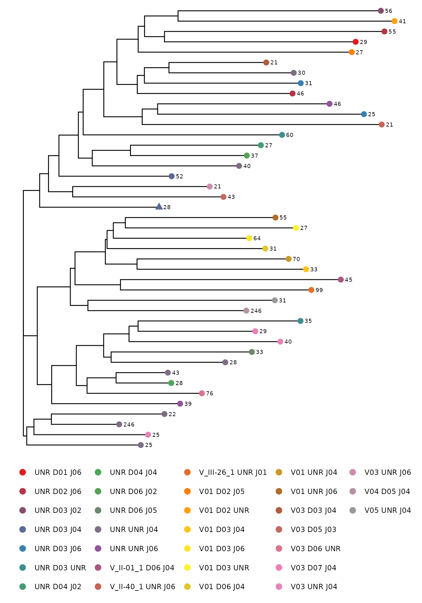
Multiple sequence alignment
In LymphoSeq2, you can perform a multiple sequence alignment using
one of three methods provided by the Bioconductor msa package (ClustalW,
ClustalOmega, or Muscle), the change in functionality however is, now
the function returns a msa S4 object. One may perform the
alignment of all amino acid or nucleotide sequences in a single sample.
Alternatively, one may search for a given sequence within a list of
samples using an edit distance threshold.
alignment <- LymphoSeq2::alignSeq(
study_table = nuc_IGH_table,
repertoire_ids = "IGH_MVQ92552A_BL",
type = "junction_aa",
method = "ClustalW"
)use default substitution matrix
LymphoSeq2::plotAlignment(alignment)
#> Coordinate system already present.
#> ℹ Adding new coordinate system, which will replace the existing one.
#> Warning: No shared levels found between `names(values)` of the manual scale and the
#> data's fill values.
#> No shared levels found between `names(values)` of the manual scale and the
#> data's fill values.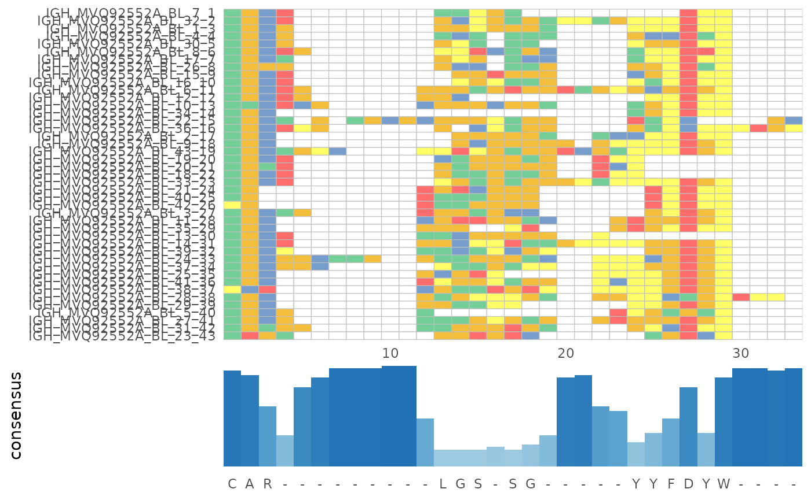
Searching for sequences
To search for one or more amino acid or nucleotide CDR3 sequences in
a list of data frames, use the function searchSeq. The
function allows sequence search with a edit distance threshold. For
example, an edit distance of 0 means the sequences are identical and an
edit distance of 1 indicates that the sequences differ by a single amino
acid or nucleotide. Match options include “global” matching which
performs end-to-end matching of sequences. “partial” matching allows
searching for sub strings with CDR3 sequences.
LymphoSeq2::searchSeq(
study_table = aa_table,
sequence = "CASSPVSNEQFF",
seq_type = "junction_aa",
match = "global",
edit_distance = 0
)
#> # A tibble: 1 × 13
#> repertoire_id junction_aa v_call d_call j_call v_family d_family j_family
#> <chr> <chr> <chr> <chr> <chr> <chr> <chr> <chr>
#> 1 TRB_Unsorted_0 CASSPVSNEQFF TRBV28-01 TRBD0… TRBJ0… V28 D02 J02
#> # ℹ 5 more variables: reading_frame <chr>, duplicate_count <int>,
#> # duplicate_frequency <dbl>, edit_distance <dbl>, searchSequence <chr>Searching for published sequences
To search your entire list of data frames for a published amino acid
CDR3 TCRB sequence with known antigen specificity, use the function
searchPublished.
LymphoSeq2::searchPublished(study_table = aa_table) |>
dplyr::filter(!is.na(PMID))
#> # A tibble: 14 × 16
#> repertoire_id junction_aa v_call d_call j_call v_family d_family j_family
#> <chr> <chr> <chr> <chr> <chr> <chr> <chr> <chr>
#> 1 TRB_CD8_949 CASSPGTGTYG… TRBV1… TRBD0… TRBJ0… V10 D01 J01
#> 2 TRB_CD8_949 CASSPSRNTEA… TRBV0… TRBD0… TRBJ0… V04 D02 J01
#> 3 TRB_CD8_CMV_369 CASSPARNTEA… TRBV0… NA TRBJ0… V04 NA J01
#> 4 TRB_CD8_CMV_369 CASSPGTGTYG… TRBV1… TRBD0… TRBJ0… V10 D01 J01
#> 5 TRB_CD8_CMV_369 CASSPSRNTEA… TRBV0… TRBD0… TRBJ0… V04 D02 J01
#> 6 TRB_Unsorted_0 CASSPQRNTEA… TRBV0… TRBD0… TRBJ0… V04 D02 J01
#> 7 TRB_Unsorted_32 CASSLEGDQPQ… TRBV0… TRBD0… TRBJ0… V05 D01 J01
#> 8 TRB_Unsorted_32 CASSLGGYEQYF TRBV1… TRBD0… TRBJ0… V11 D02 J02
#> 9 TRB_Unsorted_369 CASSPGTGTYG… TRBV1… TRBD0… TRBJ0… V10 D01 J01
#> 10 TRB_Unsorted_369 CASSYSGNTEA… TRBV0… TRBD0… TRBJ0… V06 D01 J01
#> 11 TRB_Unsorted_83 CASSLEGDQPQ… TRBV0… TRBD0… TRBJ0… V05 D01 J01
#> 12 TRB_Unsorted_83 CASSPGTGTYG… TRBV1… TRBD0… TRBJ0… V10 D01 J01
#> 13 TRB_Unsorted_83 CASSPSRNTEA… TRBV0… NA TRBJ0… V04 NA J01
#> 14 TRB_Unsorted_83 CASSYSGNTEA… TRBV0… TRBD0… TRBJ0… V06 D01 J01
#> # ℹ 8 more variables: reading_frame <chr>, duplicate_count <int>,
#> # duplicate_frequency <dbl>, PMID <fct>, HLA <fct>, antigen <fct>,
#> # epitope <fct>, prevalence <dbl>For each found sequence, a table is provides listing the antigen, epitope, HLA type, PubMed ID (PMID), and prevalence percentage of the sequence among 55 healthy donor blood samples.
You can even search of productive CDR3 amino acid sequences from the
repertoires that are found in public databases such as VdjDB, IEDB, and
McPas-TCR using the function searchDB. By specifying
dbname="all" searchDB will look for each CDR3
amino acid sequence in the dataset in all three public databases. You
can also pass a vector with any of the three databases (“VdjDB”, “IEDB”,
“McPAS-TCR”) to search just those databases.
LymphoSeq2::searchDB(study_table = aa_table, dbname = "all", chain = "trb")
#> # A tibble: 424 × 26
#> repertoire_id junction_aa v_call d_call j_call v_family d_family j_family
#> <chr> <chr> <chr> <chr> <chr> <chr> <chr> <chr>
#> 1 TRB_CD4_949 CASDGGFRNTIYF TRBV1… TRBD0… TRBJ0… V19 D02 J01
#> 2 TRB_CD4_949 CASGLVAGSTLGGE… TRBV1… TRBD0… TRBJ0… V12 D02 J02
#> 3 TRB_CD4_949 CASKPPGQGGYGYTF TRBV0… TRBD0… TRBJ0… V06 D01 J01
#> 4 TRB_CD4_949 CASRLGESPLHF NA NA TRBJ0… NA NA J01
#> 5 TRB_CD4_949 CASRPSYVGTEAFF NA NA TRBJ0… NA NA J01
#> 6 TRB_CD4_949 CASSADGVNNSPLHF TRBV0… TRBD0… TRBJ0… V05 D02 J01
#> 7 TRB_CD4_949 CASSARTELNTGEL… TRBV1… TRBD0… TRBJ0… V11 D01 J02
#> 8 TRB_CD4_949 CASSELLDSPLHF TRBV0… TRBD0… TRBJ0… V06 D02 J01
#> 9 TRB_CD4_949 CASSESAGSTGELFF TRBV1… TRBD0… TRBJ0… V10 D02 J02
#> 10 TRB_CD4_949 CASSFRTGPTSNQP… NA TRBD0… TRBJ0… NA D01 J01
#> # ℹ 414 more rows
#> # ℹ 18 more variables: reading_frame <chr>, duplicate_count <int>,
#> # duplicate_frequency <dbl>, tra_cdr3_aa <chr>, gene <chr>, epitope <chr>,
#> # pathology <chr>, antigen <chr>, tra_v_call <chr>, tra_j_call <chr>,
#> # mhc_allele <chr>, reference <chr>, score <dbl>, cell_type <chr>,
#> # source <chr>, trb_v_call <chr>, trb_j_call <chr>, Species <chr>Visualizing repertoire diversity
Antigen receptor repertoire diversity can be characterized by a
number such as clonality or Gini coefficient calculated by the
clonality function. Alternatively, you can visualize the
repertoire diversity by plotting the Lorenz curve for each sample as
defined above. In this plot, the more diverse samples will appear near
the dotted diagonal line (the line of equality) whereas the more clonal
samples will appear to have a more bowed shape.
samples <- aa_table |>
dplyr::pull(repertoire_id) |>
unique()
LymphoSeq2::lorenzCurve(repertoire_ids = samples, study_table = aa_table)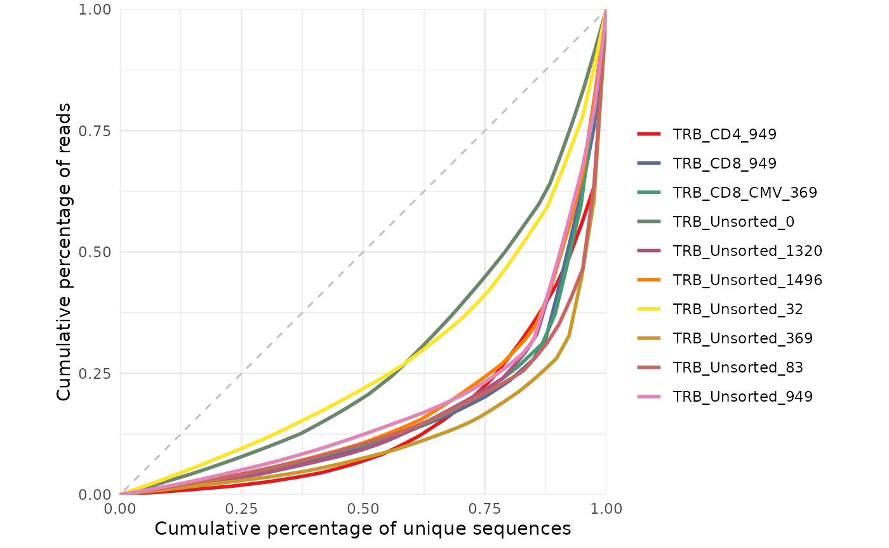
Alternatively, you can get a feel for the repertoire diversity by
plotting the cumulative frequency of a selected number of the top most
frequent clones using the function topSeqsPlot. In this
case, each of the top sequences are represented by a different color and
all less frequent clones will be assigned a single color (violet).
LymphoSeq2::topSeqsPlot(study_table = aa_table, top = 10)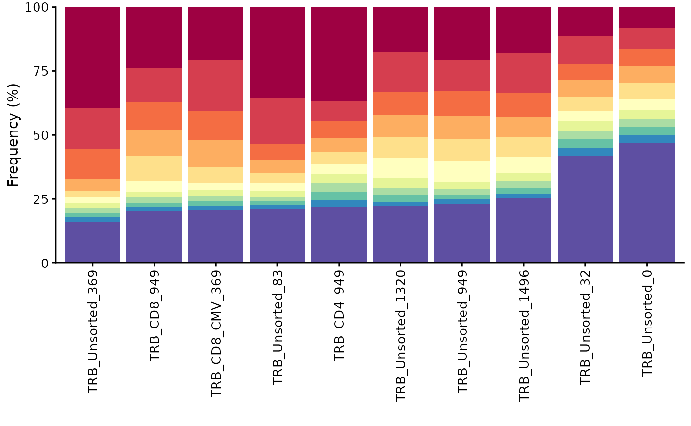
Both of these functions are built using the ggplot2 package. You can
reformat the plot using ggplot2 functions. Please refer to the
lorenzCurve and topSeqsPlot manual for
specific examples.
Comparing samples
To compare the T or B cell repertoires of all samples in a pairwise
fashion, use the bhattacharyyaMatrix or
similarityMatrix functions. Both the Bhattacharyya
coefficient and similarity score are measures of the amount of overlap
between two samples. The value for each ranges from 0 to 1 where 1
indicates the sequence frequencies are identical in the two samples and
0 indicates no shared frequencies. The Bhattacharyya coefficient differs
from the similarity score in that it involves weighting each shared
sequence in the two distributions by the arithmetic mean of the
frequency of each sequence, while calculating the similarity scores
involves weighting each shared sequence in the two distributions by the
geometric mean of the frequency of each sequence in the two
distributions.
bhattacharyya_matrix <- LymphoSeq2::scoringMatrix(aa_table, mode = "Bhattacharyya")
LymphoSeq2::pairwisePlot(bhattacharyya_matrix)
#> Warning in ggplot2::geom_text(ggplot2::aes(.data$repertoire_id,
#> .data$repertoire_id_y, : Ignoring unknown parameters: `linewidth`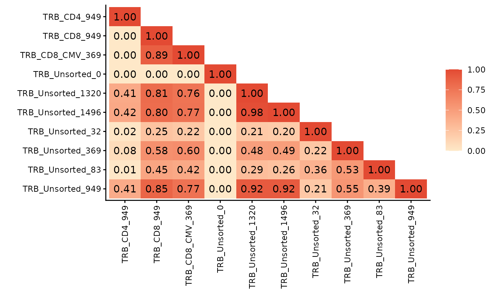
To view sequences shared between two or more samples, use the
function commonSeqs. This function requires that a
productive amino acid list be specified.
common <- LymphoSeq2::commonSeqs(
study_table = aa_table,
repertoire_ids = c("TRB_Unsorted_0", "TRB_Unsorted_32")
)
common
#> # A tibble: 0 × 1
#> # ℹ 1 variable: junction_aa <chr>To visualize the number of overlapping sequences between two or three
samples in the form of a Venn diagram, use the function
commonSeqVenn
LymphoSeq2::commonSeqsVenn(
repertoire_ids = c("TRB_Unsorted_32", "TRB_Unsorted_83"),
amino_table = aa_table
)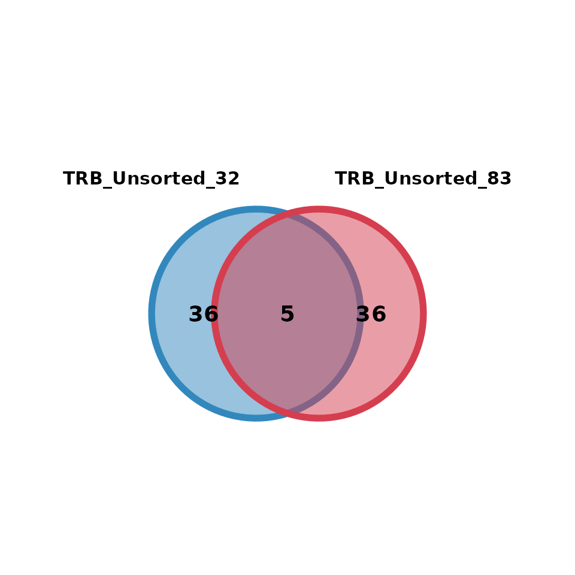
LymphoSeq2::commonSeqsVenn(
repertoire_ids = c("TRB_Unsorted_0", "TRB_Unsorted_32", "TRB_Unsorted_83"),
amino_table = aa_table
)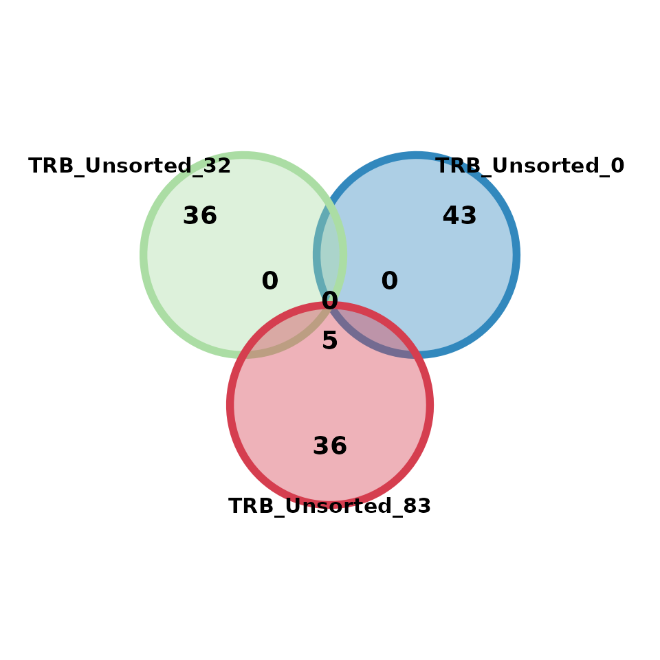
To compare the frequency of sequences between two samples as a
scatter plot, use the function commonSeqsPlot.
LymphoSeq2::commonSeqsPlot("TRB_Unsorted_32", "TRB_Unsorted_83",
amino_table = aa_table, show = "common"
)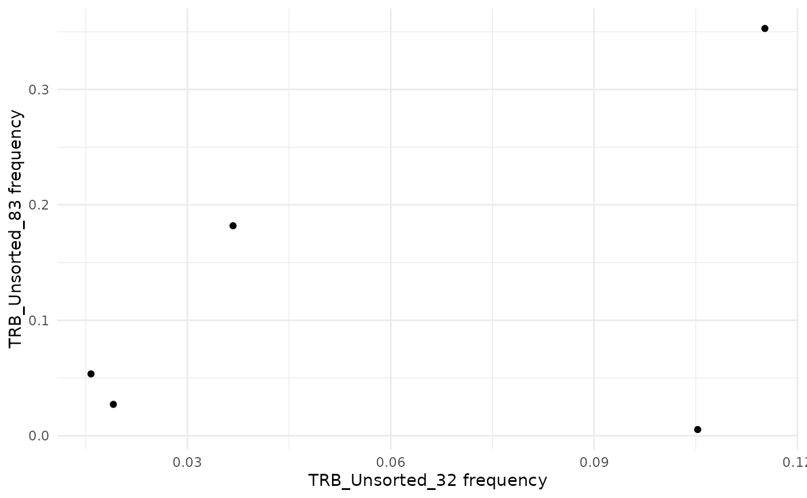
If you have more than 3 samples to compare, use the
commonSeqBar function. You can chose to color a single
sample with the color.sample argument or a desired
intersection with the color.intersection argument.
LymphoSeq2::commonSeqsBar(
amino_table = aa_table,
repertoire_ids = c(
"TRB_CD4_949", "TRB_CD8_949",
"TRB_Unsorted_949", "TRB_Unsorted_1320"
),
color_sample = "TRB_CD8_949",
labels = "no"
)
#> Warning in geom_point(data = pInterDat, aes_string(x = "x", y = "freq"), :
#> Ignoring empty aesthetic: `colour`.
#> Warning: Using `size` aesthetic for lines was deprecated in ggplot2 3.4.0.
#> ℹ Please use `linewidth` instead.
#> ℹ The deprecated feature was likely used in the UpSetR package.
#> Please report the issue to the authors.
#> This warning is displayed once every 8 hours.
#> Call `lifecycle::last_lifecycle_warnings()` to see where this warning was
#> generated.
#> Warning: The `size` argument of `element_line()` is deprecated as of ggplot2 3.4.0.
#> ℹ Please use the `linewidth` argument instead.
#> ℹ The deprecated feature was likely used in the UpSetR package.
#> Please report the issue to the authors.
#> This warning is displayed once every 8 hours.
#> Call `lifecycle::last_lifecycle_warnings()` to see where this warning was
#> generated.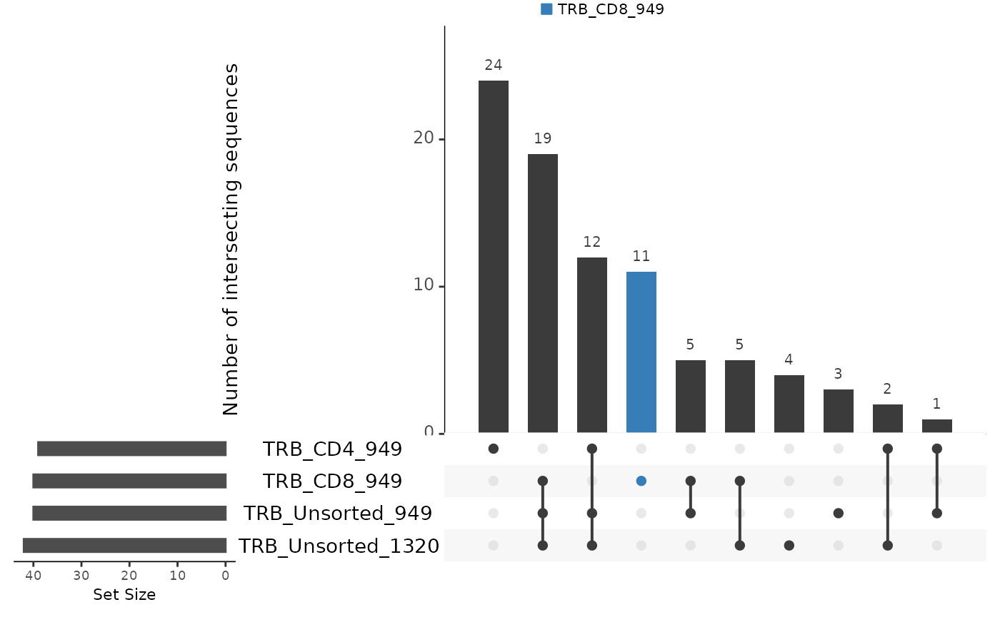
Differential abundance
When comparing a sample from two different time points, it is useful
to identify sequences that are significantly more or less abundant in
one versus the other time point (DeWitt, W.S., et al. Journal of
Virology 2015 89(8):4517-4526). The differentialAbundance
function uses a Fisher exact test to calculate differential abundance of
each sequence in two time points and reports the log2 transformed fold
change, P value and adjusted P value.
LymphoSeq2::differentialAbundance(
study_table = aa_table,
repertoire_ids = c(
"TRB_Unsorted_949",
"TRB_Unsorted_1320"
),
type = "junction_aa", q = 0.01
)
#> # A tibble: 51 × 6
#> junction_aa TRB_Unsorted_949 TRB_Unsorted_1320 p q l2fc
#> <chr> <int> <int> <dbl> <dbl> <dbl>
#> 1 CASDGGFRNTIYF 17 387 9.65e- 2 9.65e- 2 -4.51
#> 2 CASNSKADSTDTQYF 21 1325 3.60e- 3 3.60e- 3 -5.98
#> 3 CASRLGPGAGDEAFF 0 619 3.24e- 8 3.24e- 8 -Inf
#> 4 CASSDGGNTGELFF 0 686 4.76e- 9 4.76e- 9 -Inf
#> 5 CASSEALPGMVPLHF 0 374 5.18e- 5 5.18e- 5 -Inf
#> 6 CASSESAGSTGELFF 338 10326 2.55e- 2 2.55e- 2 -4.93
#> 7 CASSFPEPPVF 0 366 4.84e- 5 4.84e- 5 -Inf
#> 8 CASSFRTGPTSNQPQ… 31 1508 5.27e- 2 5.27e- 2 -5.60
#> 9 CASSHLTYNSPLHF 72 3099 5.72e- 2 5.72e- 2 -5.43
#> 10 CASSLAGDSQETQYF 106 9568 3.20e-33 3.20e-33 -6.50
#> # ℹ 41 more rowsFinding recurring sequences
To create a tibble of unique, productive amino acid sequences as rows
and sample names as headers use the seqMatrix function.
Each value in the data frame represents the frequency that each sequence
appears in the sample. You can specify your own list of sequences or all
unique sequences in the list using the output of the function
uniqueSeqs. The uniqueSeqs function creates a
tibble of all unique, productive sequences and reports the total count
in all samples.
unique_seqs <- LymphoSeq2::uniqueSeqs(productive_table = aa_table)
unique_seqs
#> # A tibble: 212 × 2
#> junction_aa duplicate_count
#> <chr> <int>
#> 1 CASSQDWERLGEQFF 99480
#> 2 CASSLQGREKLFF 90563
#> 3 CASSQDLMTVDSLFAGANVLTF 68679
#> 4 CASSPAGAYYNEQFF 30418
#> 5 CASSPPTGERDTQYF 24552
#> 6 CASSLAGDSQETQYF 22147
#> 7 CASSESAGSTGELFF 17438
#> 8 CASRDGQGSGNTIYF 11158
#> 9 CASSPSRNTEAFF 8475
#> 10 CASSQDRTGQYGYTF 7968
#> # ℹ 202 more rows
sequence_matrix <- LymphoSeq2::seqMatrix(amino_table = aa_table, sequences = unique_seqs$junction_aa)
sequence_matrix
#> # A tibble: 212 × 11
#> junction_aa TRB_CD4_949 TRB_CD8_949 TRB_CD8_CMV_369 TRB_Unsorted_0
#> <chr> <dbl> <dbl> <dbl> <dbl>
#> 1 CASDGGFRNTIYF 0.0334 0 0 0
#> 2 CASGLVAGSTLGGETQYF 0.00211 0 0 0
#> 3 CASKPPGQGGYGYTF 0.00868 0 0 0
#> 4 CASRLGESPLHF 0.00175 0 0 0
#> 5 CASRPSYVGTEAFF 0.0190 0 0 0
#> 6 CASSADGVNNSPLHF 0.00226 0 0 0
#> 7 CASSARTELNTGELFF 0.00656 0 0 0
#> 8 CASSELLDSPLHF 0.00175 0 0 0
#> 9 CASSESAGSTGELFF 0.366 0 0 0
#> 10 CASSFRTGPTSNQPQHF 0.0370 0 0 0
#> # ℹ 202 more rows
#> # ℹ 6 more variables: TRB_Unsorted_1320 <dbl>, TRB_Unsorted_1496 <dbl>,
#> # TRB_Unsorted_32 <dbl>, TRB_Unsorted_369 <dbl>, TRB_Unsorted_83 <dbl>,
#> # TRB_Unsorted_949 <dbl>If just the top clones with a frequency greater than a specified
amount are of interest to you, then use the topFreq
function. This creates a tibble of the top productive amino acid
sequences having a minimum specified frequency and reports the minimum,
maximum, and mean frequency that the sequence appears in a list of
samples. For TCRB sequences, the prevalence percentage and the published
antigen specificity of that sequence are also provided.
top_freq <- LymphoSeq2::topFreq(productive_table = aa_table, frequency = 0.001)
top_freq
#> # A tibble: 212 × 7
#> junction_aa minFrequency maxFrequency meanFrequency numberSamples prevalence
#> <chr> <dbl> <dbl> <dbl> <int> <dbl>
#> 1 CASSLQGREKL… 0.0615 0.353 0.125 8 30.9
#> 2 CASSQDLMTVD… 0.0330 0.182 0.101 8 1.8
#> 3 CASSQDRTGQY… 0.00524 0.0272 0.0127 8 3.6
#> 4 CASSPFDRGPD… 0.00544 0.0177 0.0122 7 1.8
#> 5 CASSQDWERLG… 0.0800 0.393 0.143 6 1.8
#> 6 CASSPPTGERD… 0.00963 0.207 0.119 6 1.8
#> 7 CASSLAGDSQE… 0.0244 0.0796 0.0497 6 20
#> 8 CASRDGQGSGN… 0.00354 0.0385 0.0193 6 0
#> 9 CASSQDLGQAF… 0.00717 0.0253 0.0136 6 1.8
#> 10 CASSPAGAYYN… 0.176 0.239 0.200 5 5.5
#> # ℹ 202 more rows
#> # ℹ 1 more variable: antigen <fct>One very useful thing to do is merge the output of
seqMatrix and topFreq.
top_freq_matrix <- dplyr::full_join(top_freq, sequence_matrix)
#> Joining with `by = join_by(junction_aa)`
top_freq_matrix
#> # A tibble: 212 × 17
#> junction_aa minFrequency maxFrequency meanFrequency numberSamples prevalence
#> <chr> <dbl> <dbl> <dbl> <int> <dbl>
#> 1 CASSLQGREKL… 0.0615 0.353 0.125 8 30.9
#> 2 CASSQDLMTVD… 0.0330 0.182 0.101 8 1.8
#> 3 CASSQDRTGQY… 0.00524 0.0272 0.0127 8 3.6
#> 4 CASSPFDRGPD… 0.00544 0.0177 0.0122 7 1.8
#> 5 CASSQDWERLG… 0.0800 0.393 0.143 6 1.8
#> 6 CASSPPTGERD… 0.00963 0.207 0.119 6 1.8
#> 7 CASSLAGDSQE… 0.0244 0.0796 0.0497 6 20
#> 8 CASRDGQGSGN… 0.00354 0.0385 0.0193 6 0
#> 9 CASSQDLGQAF… 0.00717 0.0253 0.0136 6 1.8
#> 10 CASSPAGAYYN… 0.176 0.239 0.200 5 5.5
#> # ℹ 202 more rows
#> # ℹ 11 more variables: antigen <fct>, TRB_CD4_949 <dbl>, TRB_CD8_949 <dbl>,
#> # TRB_CD8_CMV_369 <dbl>, TRB_Unsorted_0 <dbl>, TRB_Unsorted_1320 <dbl>,
#> # TRB_Unsorted_1496 <dbl>, TRB_Unsorted_32 <dbl>, TRB_Unsorted_369 <dbl>,
#> # TRB_Unsorted_83 <dbl>, TRB_Unsorted_949 <dbl>Tracking sequences across samples
To visually track the frequency of sequences across multiple samples,
use the function cloneTrack This function takes the output
from the seqMatrix function. You can specify a character
vector of amino acid sequences using the parameter track to highlight
those sequences with a different color. Alternatively, you can highlight
all of the sequences from a given sample using the parameter map. If the
mapping feature is use, then you must specify a productive amino acid
list and a character vector of labels to title the mapped samples.
ctable <- LymphoSeq2::cloneTrack(
study_table = aa_table,
sample_list = c("TRB_CD8_949", "TRB_CD8_CMV_369")
)
LymphoSeq2::plotTrack(ctable)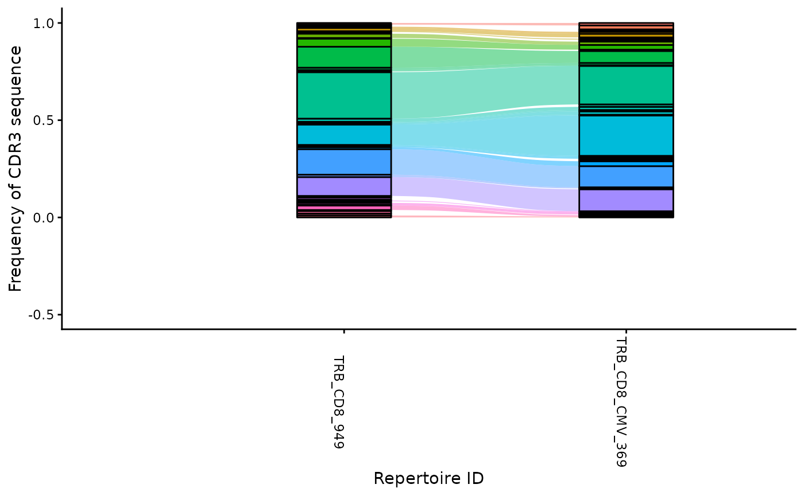
You can track particular sequences across samples by providing an optional list of CDR3 amino acid sequences.
ttable <- LymphoSeq2::topSeqs(aa_table, top = 10)
ctable <- LymphoSeq2::cloneTrack(ttable)
LymphoSeq2::plotTrack(ctable, alist = c("CASSESAGSTGELFF", "CASSLAGDSQETQYF")) + ggplot2::theme(legend.position = "bottom")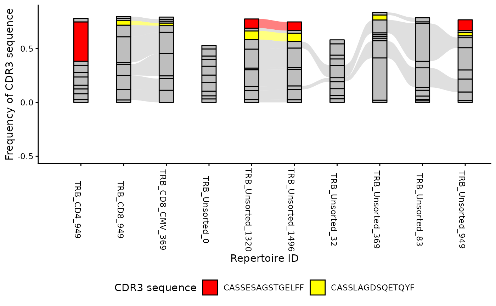
Alternatively you can use the function plotTrackSingular
to retrieve a list of alluvial diagrams each tracking one single amino
acid from the clone track table. Considering that a plot is generated
for each unique CDR3 sequence, we recommend running this feature on a
clone track table derived from only the top sequences from each
repertoire as described in the example above.
lalluvial <- ctable |>
LymphoSeq2::topSeqs(top = 1) |>
LymphoSeq2::plotTrackSingular()
lalluvial[[1]]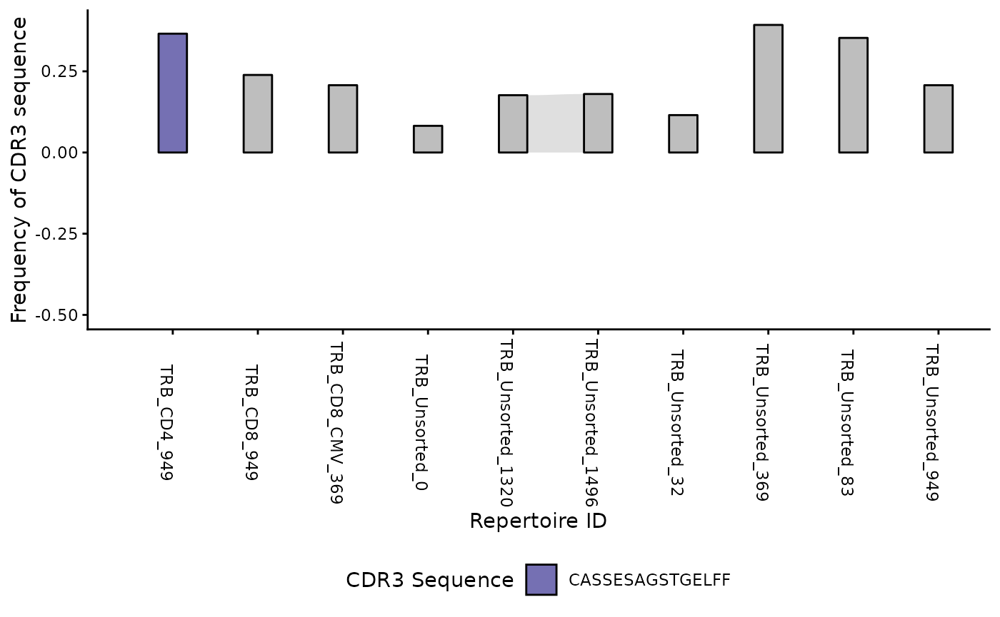
Comparing V(D)J gene usage
To compare the V, D, and J gene usage across samples, start by
creating a data frame of V, D, and J gene counts and frequencies using
the function geneFreq. You can specify if you are
interested in the “VDJ”, “DJ”, “VJ”, “DJ”, “V”, “D”, or “J” loci using
the locus parameter. Set family to TRUE if you prefer the family names
instead of the gene names as reported by ImmunoSeq.
vGenes <- LymphoSeq2::geneFreq(nuc_table, locus = "V", family = TRUE)
vGenes
#> # A tibble: 142 × 5
#> repertoire_id gene_name duplicate_count gene_type gene_frequency
#> <chr> <chr> <int> <chr> <dbl>
#> 1 TRB_CD4_949 V02 230 v_family 0.0160
#> 2 TRB_CD4_949 V04 895 v_family 0.0624
#> 3 TRB_CD4_949 V05 1043 v_family 0.0728
#> 4 TRB_CD4_949 V06 143 v_family 0.00997
#> 5 TRB_CD4_949 V07 1053 v_family 0.0735
#> 6 TRB_CD4_949 V09 103 v_family 0.00718
#> 7 TRB_CD4_949 V10 5019 v_family 0.350
#> 8 TRB_CD4_949 V11 90 v_family 0.00628
#> 9 TRB_CD4_949 V12 29 v_family 0.00202
#> 10 TRB_CD4_949 V18 188 v_family 0.0131
#> # ℹ 132 more rowsTo create a chord diagram showing VJ or DJ gene associations from one
or more more samples, combine the output of geneFreq with
the function chordDiagramVDJ. This function works well the
topSeqs function that creates a data frame of a selected
number of top productive sequences. In the example below, a chord
diagram is made showing the association between V and J genes of just
the single dominant clones in each sample. The size of the ribbons
connecting VJ genes correspond to the number of samples that have that
recombination event. The thicker the ribbon, the higher the frequency of
the recombination.
top_seqs <- LymphoSeq2::topSeqs(nuc_table, top = 1)
LymphoSeq2::chordDiagramVDJ(
study_table = top_seqs,
association = "VJ",
colors = c("darkred", "navyblue")
)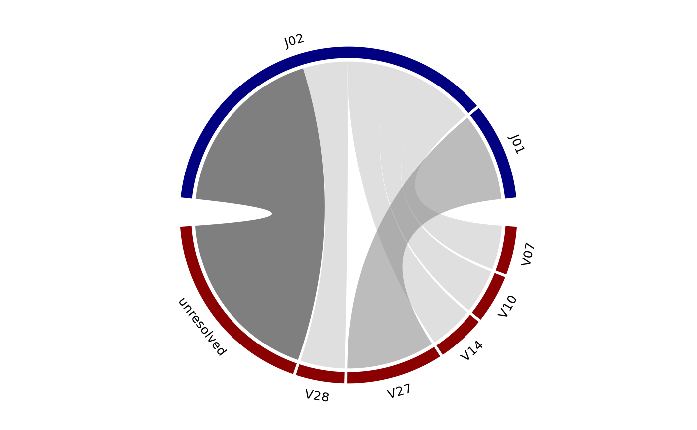
You can also visualize the results of geneFreq as a heat
map, word cloud, or cumulative frequency bar plot with the support of
additional R packages as shown below.
vGenes <- LymphoSeq2::geneFreq(nuc_table, locus = "V", family = TRUE)
LymphoSeq2::geneWordCloud(
gene_freq_table = vGenes,
repertoire_id = "TRB_Unsorted_83"
)
vGenes <- LymphoSeq2::geneFreq(nuc_table, locus = "V", family = TRUE) |>
tidyr::pivot_wider(
id_cols = gene_name,
names_from = repertoire_id,
values_from = gene_frequency,
values_fn = sum,
values_fill = 0
)
gene_names <- vGenes |>
dplyr::pull(gene_name)
vGenes <- vGenes |>
dplyr::select(-gene_name) |>
as.matrix()
rownames(vGenes) <- gene_names
pheatmap::pheatmap(vGenes, scale = "row")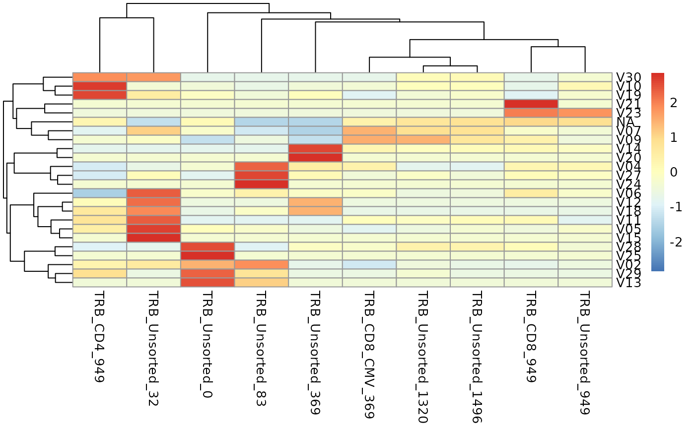
vGenes <- LymphoSeq2::geneFreq(nuc_table, locus = "V", family = TRUE)
multicolors <- grDevices::colorRampPalette(rev(RColorBrewer::brewer.pal(9, "Set1")))(28)
ggplot2::ggplot(vGenes, ggplot2::aes(x = repertoire_id, y = gene_frequency, fill = gene_name)) +
ggplot2::geom_bar(stat = "identity") +
ggplot2::theme_minimal() +
ggplot2::scale_y_continuous(expand = c(0, 0)) +
ggplot2::guides(fill = ggplot2::guide_legend(ncol = 2)) +
ggplot2::scale_fill_manual(values = multicolors) +
ggplot2::labs(y = "Frequency (%)", x = "", fill = "") +
ggplot2::theme(axis.text.x = ggplot2::element_text(angle = 90, vjust = 0.5, hjust = 1))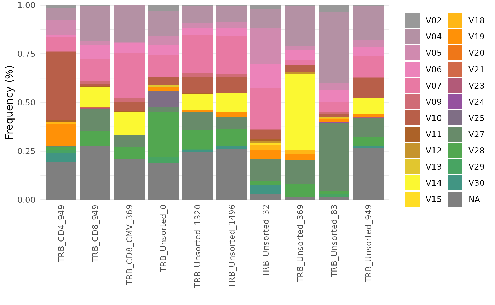
Removing sequences
Occasionally you may identify one or more sequences in your data set
that appear to be contamination. You can remove an amino acid sequence
from all data frames using the function removeSeq and
recompute frequencyCount for all remaining sequences.
LymphoSeq2::searchSeq(study_table = aa_table, sequence = "CASSESAGSTGELFF", seq_type = "junction_aa")
#> # A tibble: 4 × 13
#> repertoire_id junction_aa v_call d_call j_call v_family d_family j_family
#> <chr> <chr> <chr> <chr> <chr> <chr> <chr> <chr>
#> 1 TRB_CD4_949 CASSESAGSTG… TRBV1… TRBD0… TRBJ0… V10 D02 J02
#> 2 TRB_Unsorted_1320 CASSESAGSTG… TRBV1… TRBD0… TRBJ0… V10 D02 J02
#> 3 TRB_Unsorted_1496 CASSESAGSTG… TRBV1… TRBD0… TRBJ0… V10 D02 J02
#> 4 TRB_Unsorted_949 CASSESAGSTG… TRBV1… TRBD0… TRBJ0… V10 D02 J02
#> # ℹ 5 more variables: reading_frame <chr>, duplicate_count <int>,
#> # duplicate_frequency <dbl>, edit_distance <dbl>, searchSequence <chr>
cleansed <- LymphoSeq2::removeSeq(study_table = aa_table, sequence = "CASSESAGSTGELFF")
LymphoSeq2::searchSeq(study_table = cleansed, sequence = "CASSESAGSTGELFF", seq_type = "junction_aa")
#> # A tibble: 0 × 13
#> # ℹ 13 variables: repertoire_id <chr>, junction_aa <chr>, v_call <chr>,
#> # d_call <chr>, j_call <chr>, v_family <chr>, d_family <chr>, j_family <chr>,
#> # reading_frame <chr>, duplicate_count <int>, duplicate_frequency <dbl>,
#> # edit_distance <dbl>, searchSequence <chr>Rarefaction curves
Rarefaction and extrapolation curves allow for comparison of TCR diversity across repertoires given a ideal sequencing depth. Rarefaction and extrapolation curves are drawn by sampling a sequencing dataset to various depths to understand the trajectory of sequence diversity and then extrapolating the curve to an ideal depth.
LymphoSeq2::plotRarefactionCurve(study_table = aa_table)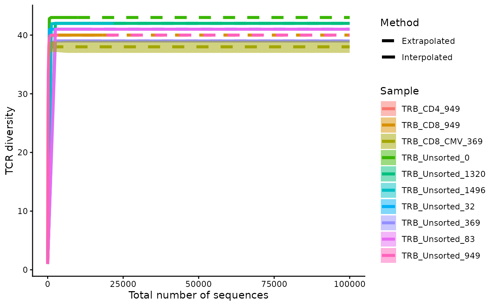
Session info
sessionInfo()
#> R version 4.5.1 (2025-06-13)
#> Platform: x86_64-pc-linux-gnu
#> Running under: Ubuntu 24.04.3 LTS
#>
#> Matrix products: default
#> BLAS: /usr/lib/x86_64-linux-gnu/openblas-pthread/libblas.so.3
#> LAPACK: /usr/lib/x86_64-linux-gnu/openblas-pthread/libopenblasp-r0.3.26.so; LAPACK version 3.12.0
#>
#> locale:
#> [1] LC_CTYPE=C.UTF-8 LC_NUMERIC=C LC_TIME=C.UTF-8
#> [4] LC_COLLATE=C.UTF-8 LC_MONETARY=C.UTF-8 LC_MESSAGES=C.UTF-8
#> [7] LC_PAPER=C.UTF-8 LC_NAME=C LC_ADDRESS=C
#> [10] LC_TELEPHONE=C LC_MEASUREMENT=C.UTF-8 LC_IDENTIFICATION=C
#>
#> time zone: UTC
#> tzcode source: system (glibc)
#>
#> attached base packages:
#> [1] stats graphics grDevices utils datasets methods base
#>
#> other attached packages:
#> [1] purrr_1.1.0 future_1.67.0 wordcloud2_0.2.1 vroom_1.6.6
#> [5] RColorBrewer_1.1-3 LymphoSeq2_2.0.0
#>
#> loaded via a namespace (and not attached):
#> [1] gridExtra_2.3 phangorn_2.12.1 rlang_1.1.6
#> [4] magrittr_2.0.4 furrr_0.3.1 compiler_4.5.1
#> [7] reshape2_1.4.4 systemfonts_1.3.1 vctrs_0.6.5
#> [10] ggalluvial_0.12.5 quadprog_1.5-8 stringr_1.5.2
#> [13] shape_1.4.6.1 pkgconfig_2.0.3 crayon_1.5.3
#> [16] fastmap_1.2.0 XVector_0.48.0 labeling_0.4.3
#> [19] utf8_1.2.6 rmarkdown_2.30 tzdb_0.5.0
#> [22] UCSC.utils_1.4.0 seqmagick_0.1.7 ragg_1.5.0
#> [25] UpSetR_1.4.0 bit_4.6.0 xfun_0.53
#> [28] cachem_1.1.0 aplot_0.2.9 GenomeInfoDb_1.44.3
#> [31] jsonlite_2.0.0 progress_1.2.3 tweenr_2.0.3
#> [34] parallel_4.5.1 prettyunits_1.2.0 R6_2.6.1
#> [37] bslib_0.9.0 ggmsa_1.14.1 stringi_1.8.7
#> [40] parallelly_1.45.1 jquerylib_0.1.4 Rcpp_1.1.0
#> [43] knitr_1.50 iNEXT_3.0.2 readr_2.1.5
#> [46] IRanges_2.42.0 Matrix_1.7-3 igraph_2.1.4
#> [49] tidyselect_1.2.1 stringdist_0.9.15 yaml_2.3.10
#> [52] codetools_0.2-20 listenv_0.9.1 lattice_0.22-7
#> [55] tibble_3.3.0 plyr_1.8.9 treeio_1.32.0
#> [58] withr_3.0.2 S7_0.2.0 evaluate_1.0.5
#> [61] gridGraphics_0.5-1 desc_1.4.3 polyclip_1.10-7
#> [64] circlize_0.4.16 LymphoSeqDB_0.99.2 Biostrings_2.76.0
#> [67] pillar_1.11.1 ggtree_3.16.3 stats4_4.5.1
#> [70] ggfun_0.2.0 generics_0.1.4 dtplyr_1.3.2
#> [73] S4Vectors_0.46.0 hms_1.1.3 ggplot2_4.0.0
#> [76] scales_1.4.0 tidytree_0.4.6 globals_0.18.0
#> [79] glue_1.8.0 pheatmap_1.0.13 lazyeval_0.2.2
#> [82] tools_4.5.1 data.table_1.17.8 fs_1.6.6
#> [85] fastmatch_1.1-6 grid_4.5.1 tidyr_1.3.1
#> [88] ape_5.8-1 R4RNA_1.36.0 colorspace_2.1-2
#> [91] nlme_3.1-168 GenomeInfoDbData_1.2.14 patchwork_1.3.2
#> [94] ggforce_0.5.0 cli_3.6.5 msa_1.40.0
#> [97] rappdirs_0.3.3 textshaping_1.0.3 dplyr_1.1.4
#> [100] gtable_0.3.6 yulab.utils_0.2.1 sass_0.4.10
#> [103] digest_0.6.37 BiocGenerics_0.54.0 ggplotify_0.1.3
#> [106] htmlwidgets_1.6.4 farver_2.1.2 htmltools_0.5.8.1
#> [109] pkgdown_2.1.3 lifecycle_1.0.4 httr_1.4.7
#> [112] GlobalOptions_0.1.2 bit64_4.6.0-1 MASS_7.3-65